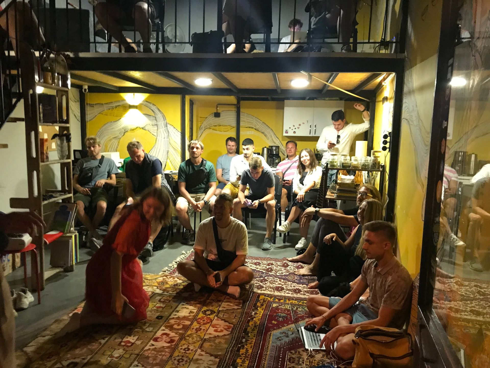
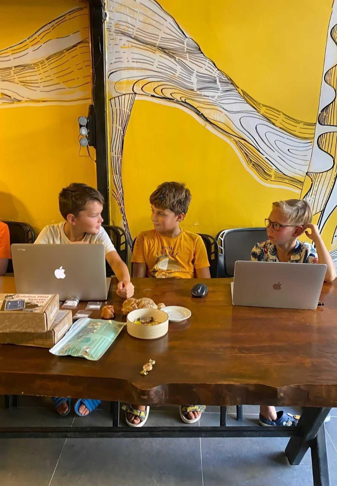

ETH Riyadh
Web3 Hub participated in ETH Riyadh, connecting with the rapidly growing blockchain ecosystem in Saudi Arabia. We established key partnerships with Middle Eastern investors and developers, strengthening the META network.
From a small community in Kas, Antalya to a global Web3 innovation network spanning the Middle East, Turkey, and Africa.

Web3 Hub started in 2021 as Web3 Hub Kas, a grassroots community initiative in the beautiful coastal town of Kas, Antalya, Turkey. Our founders recognized the potential of the Web3 movement and wanted to create a physical space where blockchain enthusiasts, developers, and entrepreneurs could come together.
Nestled on Turkey's stunning Mediterranean coast, Kas provided the perfect setting: a relaxed yet inspiring environment that attracted digital nomads and tech professionals from around the world. What started as informal meetups and workshops quickly grew into something much bigger.
In 2022, Web3 Hub Kas transitioned into Web3 META Hub, where META stands for Middle East, Turkey, Africa. This transformation reflected our growing ambitions and expanding network.
Our network now includes investors and developers from Riyadh, the UAE, and the Far East. We have forged partnerships with Chinese DAOs and collaborated with blockchain communities across multiple continents. The Web3 Hub became a bridge connecting Eastern and Western blockchain ecosystems.

In 2023, Web3 Hub expanded its presence across the international blockchain landscape.
Web3 Hub participated in ETH Riyadh, connecting with the rapidly growing blockchain ecosystem in Saudi Arabia. We established key partnerships with Middle Eastern investors and developers, strengthening the META network.
At Dubai Gitex, one of the largest technology exhibitions in the world, Web3 Hub showcased our community model and connected with global tech leaders. This participation solidified our presence in the UAE tech scene.
Web3 Hub engaged with the vibrant blockchain communities in Moscow, exploring cross-border collaboration opportunities and establishing connections with Russian-speaking Web3 developers and entrepreneurs.
Hosted at Bahcesehir University, ETHDevCon Istanbul was a landmark event where Web3 Hub played a key role. This event brought together Turkey's brightest blockchain developers and marked our growing influence in the Turkish Web3 ecosystem.
Web3 Hub established strategic partnerships with leading Chinese DAOs, bridging the gap between Eastern and Western blockchain communities. These collaborations opened new avenues for cross-cultural innovation and knowledge exchange.
Through all our global activities, Kas, Antalya remains our spiritual home and operational headquarters. The unique blend of Mediterranean lifestyle and tech-forward community makes Kas the ideal location for a Web3 Hub.
Whether you are in Kas, Turkey or anywhere in the world, Web3 Hub welcomes you to join our growing community of blockchain innovators.
Connect With Us Join our Telegram